🚝 Exploring Las Colinas' Mothballed Monorail

Sign at the entrance of the APT
On the surface, Dallas looks like just another cookie-cutter commuter city. Compared to Austin’s booming tech industry and laid-back vibe, Dallas’ historic hyperfocus on sprawling office parks has always felt a bit clinical. But the combination of this all-work all-the-time culture and a early 80’s real-estate boom led to some crazy planning experiments, and none were as crazy as the Irving’s Las Colinas district. Real estate mogul Ben Carpenter’s original plan was to transform his family’s ranch (El Ranchito de Las Colinas) into a master-planned community. No expense was spared - Las Colinas was a place where (as D Magazine put it in 1987): “you could gaze out your office window past a sparkling Lake Carolyn… watch shoppers take a water taxi down the canals to lunch; where you could walk out of your office and be on one of four championship golf courses in ten minutes… never leaving the manicured environs of Las Colinas.” But Las Colinas’ boldest stroke was indisputably its Area Personal Transit system.

Two APT cars near Bell Tower Station. Image from APT renovation brochure, circa 2013.
How how it started
Emphasis on Personal, especially in contrast to Mass transit. You see, the urban planners of Las Colinas didn’t want some plebeian subway system. No, they needed a bleeding-edge solution that could zip commuters from skyscraper to skyscraper in climate-controlled comfort. They needed an APT.

The APT’s futuristic (for 1980) command center. Note the system map on the wall, with room for line extensions that never came.
So in the summer of 1989 the much-awaited APT system opened to an eager public. The stars of the show were AEG-Westinghouse’s cutting-edge transit vehicles. The APT shuttles looked straight off a Star Wars soundstage - all sharp creases and aggressive angles. Despite the radwood rocketship styling, the APT wasn’t fast. But it was entirely automated - an impressive feat given the level of technology available in 1986! Pressing a button on the platform would summon an APT shuttle to whisk you to one of 3 other stations on the line, all entirely driverless!

Map of present and future APT system from Jon Bell’s excellent blog.
Of course, more stations were originally planned. What exists today is just a small subset of the intended 5.5 mile loop. But around the time APT started rolling, things in Las Colinas took a turn for the worse. Oil prices dropped and investment dried up, turning Las Colinas’ densest office complexes into a ghost towns. Without commuters to move, the APT was deemed “too expensive” and mothballed in 1993. In 2013, the Dallas Area Rapid Transit (DART) Orange Line opened nearby, giving the APT a second lease on life. While the automation system didn’t survive, the APT saw decent utilization until Covid-19 gave the city an excuse to kill the project again.

Stonehenge-like guideway supports for the cancelled red line expansion. (Photo credit: Jon Bell’s transit blog)
{kind=link}
How it’s going
So, what’s left of the APT system in May 2024? Quite a lot! When I had some time to kill in Irving, I found that many stations and supporting infrastructure is still open to the public! Let’s start with the crown jewel of the system: Bell Tower Station.
Bell Tower Station

The APT’s Bell Tower Station in 2024. Note the glassed-off passenger platform peeking through the yellow columns directly right of the bell tower.

APT guideway, weaving between skyscrapers above Las Colinas’ faux-Venice canals
I was even able to enter Bell Tower Station, which looks pretty good (considering its technically been closed for 4 years)!
| 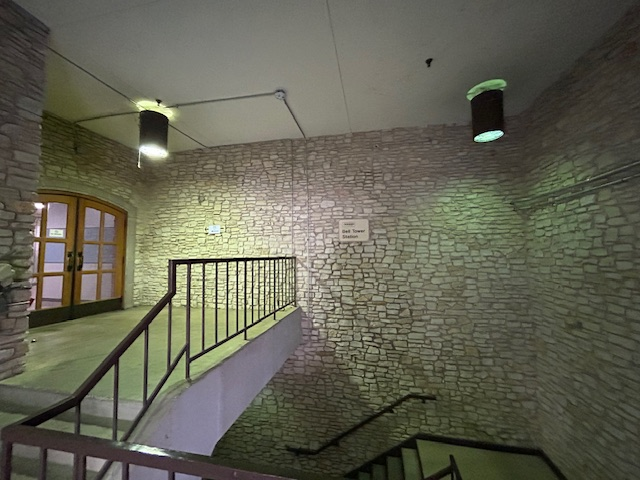 | 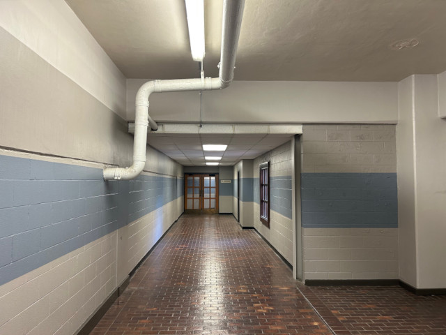 |
|---|---|
| Bell Tower Station’s ground-level staircase | Platform access hallway. The slightly raised tile flooring on the right likely hosted ticket machines. |
I got as far as the former turnstile station, where access to the platform was blocked by foreboding steel shutters.
| 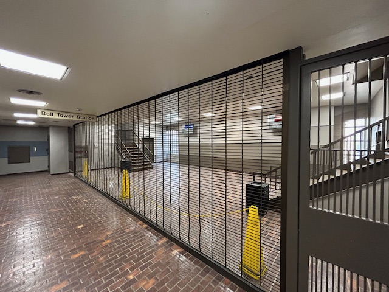 | 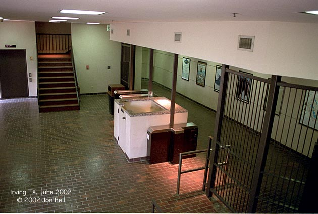 |
|---|---|
| Platform waiting area, sadly blocked off since the system’s closure in 2020 | Platform waiting area circa 2002 (from Jon Bell’s blog) |
Bell Tower Station was a sort of central station for the APT, handling traffic from both the red and blue lines.
| 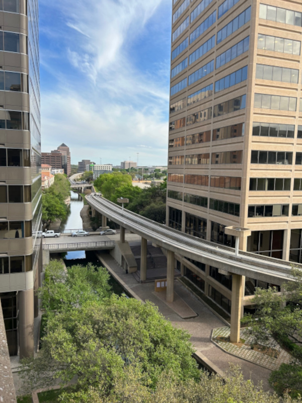 | 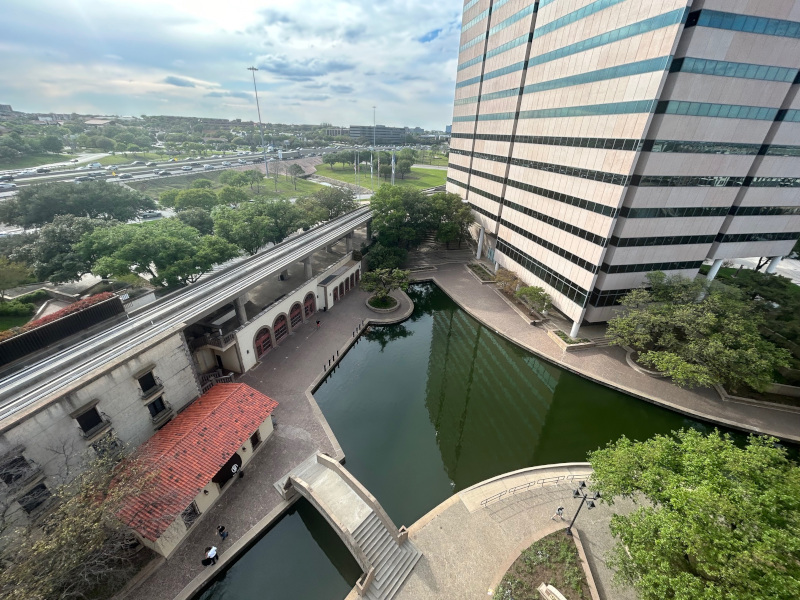 |
|---|---|
| Downline from Bell Tower Station, towards 600 Las Colinas Blvd. (Previously Cigna Tower) | Upline towards DART connection and Urban Towers, through another Venice-inspired canal |
Tower 909 and DART Connection

The APT’s 2012 Tower 909 expansion. The APT station itself is behind the trees on the far left.
In 2013, the Tower 909 APT station added a pedestrian bridge and elevator service to the then-new DART orange line. According to Jon Bell, this led to an increase in “commuter-type riders”, improving ridership numbers. Today, the pedestrian bridge is still open, but the platform is once again fenced off.
| 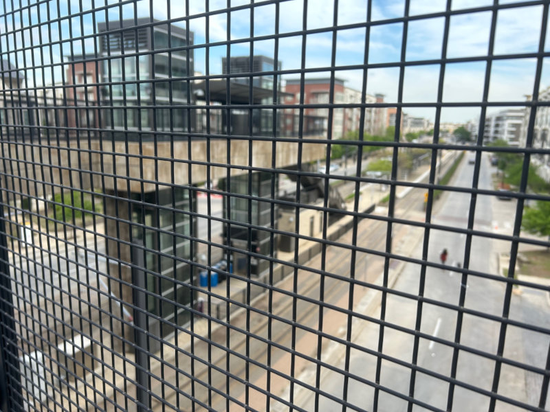 | 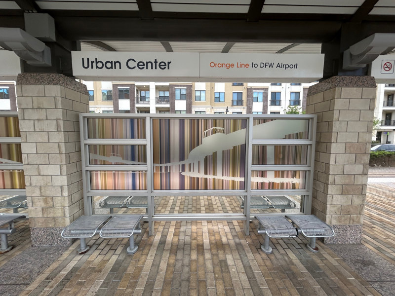 |
|---|---|
| Another view of the pedestrian bridge, flanked by DART’s Urban Center station. | Even the DART’s artwork (Dartwork?) references the APT! |
This seems like a massive oversight; DART built their elevator tower right in the path of the APT tracks, actively blocking any further extension of the blue line! Was Las Colinas really that pessimistic about post-renovation ridership?
| 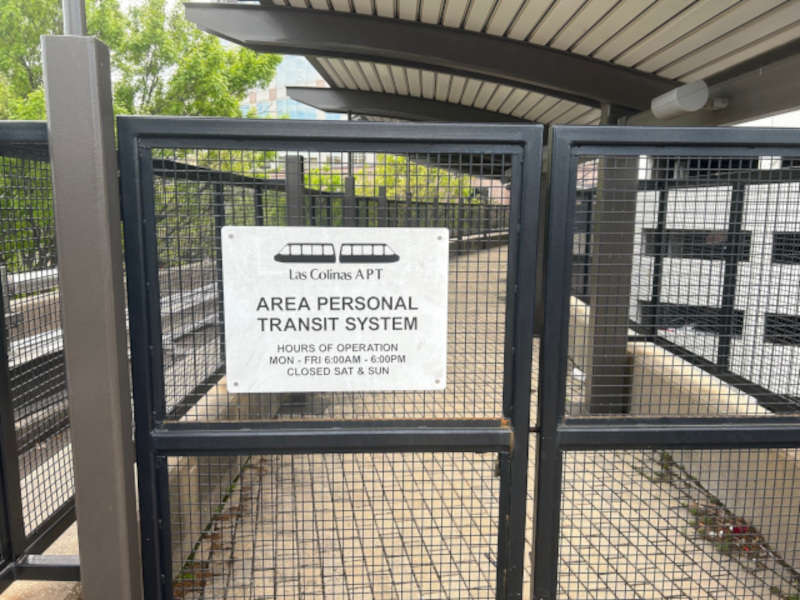 | 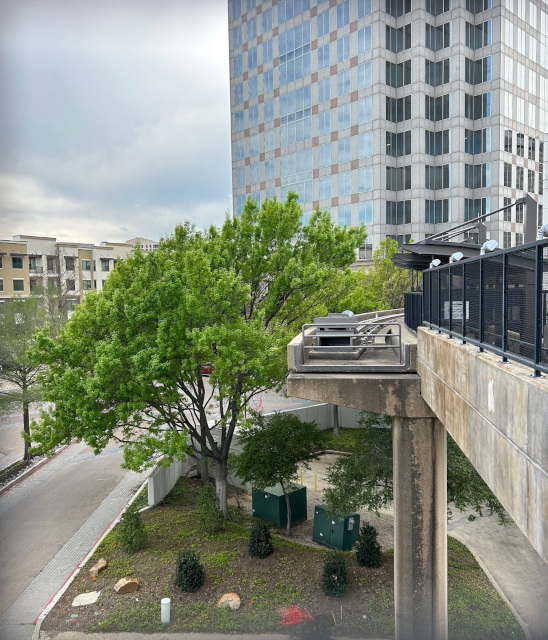 |
|---|---|
| Tower 909’s APT platform. It didn’t even run on weekends! | APT tracks to nowhere. The footbridge this picture was taken from blocks the blue line from expanding further east |
Urban Towers

The APT guideway entering Urban Towers.
One company was so invested in the APT that they built a station at the heart of their headquarters! That company was Xerox, who abandoned the complex sometime after its construction in 1984. Their former Xerox Center is now called “Urban Towers”, which still advertises the APT as an amenity despite the system’s 2020 closure.
| 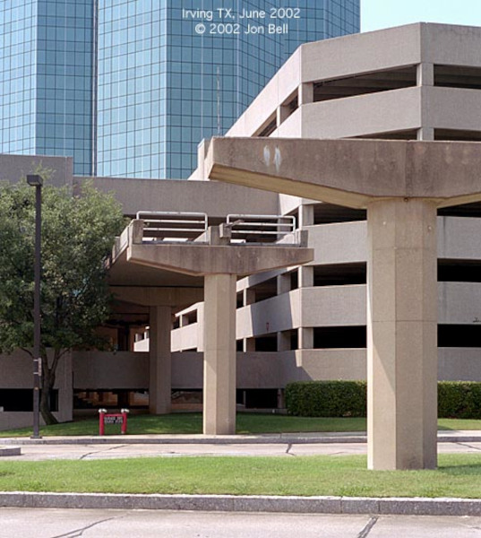 | 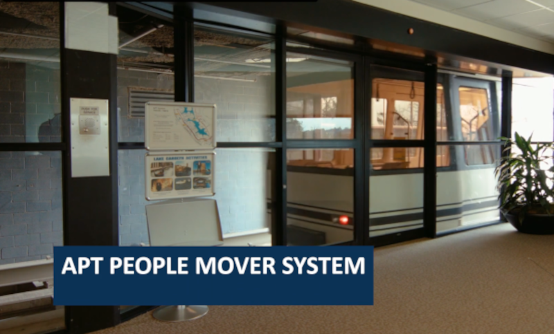 |
|---|---|
| The APT planned on expanding north of Urban Towers, too. (Photo credit: Jon Bell’s Blog) | Interior of Urban Towers’ APT station, from Urban Towers’ marketing vid. |
The Future of the APT?
Will the APT reopen? I’d love to be optimistic, but things look pretty bleak. A flurry of new development has been built over the planned APT right-of-way. New tracks could be added, but would never be as organically integrated as the first-gen sections. Besides, any expansion seems unthinkable to the city. In their eyes, the APT is an eyesore, a footnote. As it stands, the APT is closed indefinitely.
So, did the APT even matter? I think so. The very existence of the APT exemplifies a certain militant optimism; this belief that cutting-edge technology can reshape the way business is done and life is lived. Even if transit-integrated communities didn’t change the world, the APT stands as a reminder to continue seeking creative solutions to everyday problems. Maybe that’s a wildly idealistic takeaway to draw from a mothballed monorail. But hey, Las Colinas still operates Venetian gondola cruises in landlocked North Texas. The place oozes optimism; so sue me if some of it rubbed off!
More APT Resources: